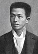
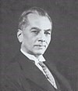
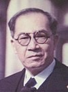
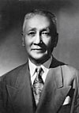
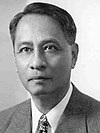
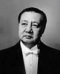
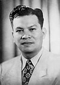
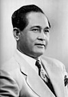
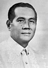
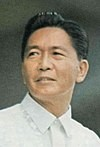

Name: Emilio F. Aguinaldo
Lifespan: (1869–1964)
Term:May 7, 1899–April 1, 1901[a](1 year, 329 days)

Name: Manuel L. Quezon
Lifespan: (1878–1944)
Term:November 15, 1935-August 1, 1944[c](8 years, 260 days)

Name: Jose P. Laurel
Lifespan: (1891–1959)
Term:October 14, 1943–August 17, 1945[d](1 year, 307 days)

Name: Sergio S. Osmeña
Lifespan: (1878–1961)
Term:August 1, 1944–May 28, 1946(1 year, 300 days)

Name: Manuel A. Roxas
Lifespan: (1892–1948)
Term: May 28, 1946–April 15, 1948[c](1 year, 323 days)

Name: Elpidio R. Quirino
Lifespan: (1890–1956)
Term: April 17, 1948 –December 30, 1953(5 years, 257 days)

Name: Ramon D. Magsaysay
Lifespan: (1907–1957)
Term: December 30, 1953 –March 17, 1957[c](3 years, 77 days)

Name: Carlos P. Garcia
Lifespan: (1896–1971)1)
Term: March 18, 1957 –December 30, 1961(4 years, 287 days)

Name: Diosdado P. Macapagal
Lifespan: (1910–1997)
Term: December 30, 1961
–
December 30, 1965
(4 years, 0 days)

Name: Ferdinand E. Marcos
Lifespan: (1917–1989)
Term: (until 1978) December 30, 1965
–
February 25, 1986[j]
(20 years, 57 days)
Name: Corazon C. Aquino
Lifespan: (1933–2009)
Term: (until 1988) February 25, 1986
–
June 30, 1992
(6 years, 126 days)
Name: Corazon C. Aquino
Lifespan: (1933–2009)
Term: (until 1988) February 25, 1986
–
June 30, 1992
(6 years, 126 days)
Name: Fidel Valdez Ramos
Lifespan: (1992-1998)
Term: June 30, 1992
–
June 30, 1998
(6 years, 0 days)
Name: Joseph E. Estrada
Lifespan: (born 1937)
Term: June 30, 1998
–
January 20, 2001[q]
(2 years, 204 days)
Name: Gloria Macapagal Arroyo
Lifespan: (born 1947)
Term: January 20, 2001
–
June 30, 2010
(9 years, 161 days)
Name: Benigno Simeon Aquino III
Lifespan: (1960–2021)
Term: June 30, 2010
–
June 30, 2016
(6 years, 0 days)
Name: Rodrigo R. Duterte
Lifespan: (born 1945)
Term: June 30, 2016
–
June 30, 2022
(6 years, 0 days)
Name: Ferdinand Marcos Jr.
Lifespan: (born 1957)
Term: June 30, 2022
–
present
(1 year, 250 days)